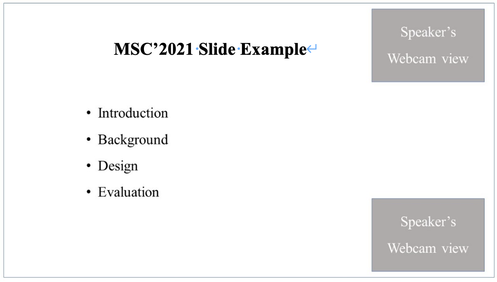

Instructions for Presenters
These instructions are for presenters at the International Workshop on Memory and Storage Computing (MSC) @ ESWEEK 2021.
Presentations: Authors are required to record videos of their presentations and prepare their slide decks prior to the conference event. Videos, papers and slide decks are due on Sunday, Oct 4 2021 23:59 (AoE) .
Authors of regular papers must prepare a video of 12-15 minutes in length and authors of poster papers must prepare a video of 5-8 minutes in length: This video will be played live for you by the MSC staff during the event at your designated talk time slot of the program and will be followed by a Q&A session that authors will answer live.
Camera Ready Paper Specifications
Video Specifications: Please follow the below guidelines for preparing a video presentation of your accepted papers.
- MP4 file format with 1080p preferred
- 16:9 aspect ratio preferred
- 100MB max file size (Note: If the file size of your video is larger than 100MB, please contact us.)
- Clear audio (headphones and headsets are permitted)
- Fullscreen slides with a speaker’s webcam view as follows:
Note: Please ensure that the speaker’s webcam view must not cover/overlay any appropriate information on your slides. The webcam view can be placed on top right or bottom right of the slide.

Slides Specifications
- Please upload the talk slides from the same video presentation that will be played during the event.
- Introduction slide at the beginning of your presentation that clearly lists the name of your paper and the authors.
- Closing slide to thank your audience and/or collaborators and list your contact information should you wish to receive follow-up questions from attendees.
- Please make sure to send a PDF format for your slide decks.
Submitting via Google Drive or Email
When you are ready, please submit your presentation video and slide decks via google drive or email in preference.
- Google Drive Option:Go to the page https://drive.google.com/drive/folders/1mIjttWInpM8ME1GnpBHRj8vzS_pRDzgQ?usp=sharing. Upload you package.
- Email Option: Please use MSC2021-PaperID, such as MSC2021-1, as email title and send you package to this email: cqu_liang@qq.com. We will response to you when your email is received. Otherwise, please send email to confirm it.
- Please package your video, paper and slide deck and name the package as: MSC21-PaperID.zip, and names the video, paper and slide deck as follow: MSC21-PaperID-Video.mp4, MSC21-PaperID-Paper.pdf, MSC-PaperID-PPT.ppt.
- Example is: MSC-1.zip with MSC21-1-Video.mp4, MSC21-1-Paper.pdf, MSC-1-PPT.ppt.
General Recording Tips
- Please ensure that the webcam inset of your own face does not obstruct any part of your slides. For example, if you place it at the top right, ensure that it doesn’t cover any part of any title on any slide.
- Ensure your surroundings are quiet, no background noise.
- Turn off any alerts on your computer, phone, etc. (e.g., use airplane mode).
- Avoid using a noisy keyboard, especially if the space-bar makes a distinct clicking sound. If you can’t use a quieter keyboard, use keys other than the space-bar (e.g., right or down arrow key); or advance your slides using the mouse.
- Finally, you and your co-authors should watch your own videos to ensure they look and sound good.
Recording Your Talk with Zoom
Authors may use any video conferencing software that is able to record a picture-in-picture screen-shared presentation. For example, here are the instructions for recording your presentation in the preferred NVMSA format using Zoom:
- Open the Zoom desktop application and select New Meeting.
- Select Join with computer audio if prompted. Please use headphones or a headset equipped with a microphone for high quality audio. Be sure you are unmuted.
- Open your presentation on your computer and maximize it so that it is in full screen mode.
- Click on the green Share Screen button on the bottom toolbar of Zoom.
- Select the screen containing your presentation. Leave "Share computer sound" and "Optimize Screen Share for Video Clip" unchecked. Click Share.
- Your video will automatically place itself in the top or bottom right-hand corner. We ask that you please click through your presentation slides with your video window in the top or bottom right corner to ensure that your webcam footage does not cover or obstruct any important information on your slides. If so, we ask that you please edit your slides with the top/bottom right-hand video footage view in mind.
- Hover your mouse over the "You are screen sharing" green bar so that the menu bar above appears. Select More.
- When you are ready to record your presentation, select Record from the dropdown menu.You may be given the choice to "Record on this computer" or "Record to the Cloud," please choose what fits best for you.
- When you have finished recording, hover your mouse over the "You are screen sharing" green bar so the menu appears again. Select More.
- From the drop-down menu, select Stop recording. You may also Pause recording if you are not finished and resume when you are ready.
- Your video will export once your meeting has ended. Select Stop Share to end your screen share.
- Select End>End Meeting for All in the bottom right corner of your Zoom meeting.
- Your video will now automatically convert and your computer may prompt you for access to the Documents folder to save your video. Click OK.
- Your video is now saved to your computer in the Documents folder. Be sure to review the footage of your presentation for any technical issues such as lapses in audio or lost webcam or slide footage. Please title your mp4 file as MSC21-PaperID-video.mp4.
Other Software Options
If you choose not to record your presentation using Zoom, presenters of the accepted papers can freely use any other video recording software but please ensure that your video uses:
- 16:9 aspect ratio
- the MSC preferred picture-in-picture format detailed above
- MP4 file format (.mp4)